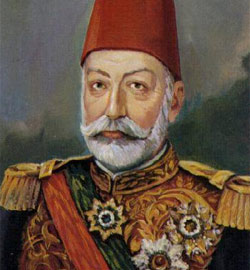

Sultan Mehmed Reþad (1844 -1918)

Mehmed Reþad, 2 Kasým 1844 tarihinde Ýstanbul’da doðdu. Babasý Sultan Abdülmecid ve annesi Gülcemal Kadýn Efendi’dir. Sultan II. Abdülhamid tahttan indirilince 27 Nisan 1909 tarihinde otuz beþinci Osmanlý Padiþahý olarak tahta çýktý. Ýslâm halifelerinin de yüzüncüsü oldu. Sultan Reþad saltanatýnýn üzerinden iki yýl geçtikten sonra Rumeli seyahatine çýktý. Bu seyahate iþtirak edenlerden birisi de Bediüzzaman Said Nursî’dir.Mehmed Reþad, 2 Kasým 1844 tarihinde Ýstanbul’da doðdu. Babasý Sultan Abdülmecid ve annesi Gülcemal Kadýn Efendi’dir. Sultan II. Mahmud’un da torunudur. Çocukluk dönemi babasýnýn yanýnda geçti. Þehzadeliði ve veliahtlýðý boyunca fen ve din bilimleri alanýnda eðitim aldý. Arapça ve Fransýzca’yý mükemmel denecek seviyede öðrendi.
Uzun süren þehzadelik dönemini bol bol okuyarak geçirdi. Babasýnýn vefatýndan sonra amcasý Sultan Abdülaziz tahta çýktý. Amcasý döneminde de saraydaki rahat hayatýný devam ettirdi. Ancak, bu rahat hayatý aðabeyi Sultan II. Abdülhamid’in tahta çýkmasýndan sonra sona erdi. Bundan sonra kendisi için sýkýntýlý bir dönem baþladý.
Sultan Abdülhamid, amcasý Sultan Abdülaziz’in tahttan indirilmesi ve daha sonra baþýna gelenlere þahit olmuþ, 5. Murad’ýn tahta çýkarýlmasý, daha sonra onun da indirilip kendisinin tahta çýkarýlmasý olaylarýný yaþadýðý için, neredeyse dönemi boyunca vehimli bir hayat sürmüþtü. Bu sebepledir ki, þehzade Mehmed Reþad devamlý kontrol altýnda tutuldu. Ayný zamanda veliaht olduðu için sürekli gözetiliyordu. Mehmed Reþad da veliahtlýðý boyunca günlerini haremde geçirdi. Þiir ve kitap okudu.
Mehmed Reþad’ýn veliahtlýðý 65 yaþýna kadar devam etti. Ýkinci Meþrûtiyetin ilaný, 31 Mart Hadisesi ve akabinde meydana gelen geliþmelerden (dahli olmadýðý halde) sorumlu tutulan Sultan II. Abdülhamid tahttan indirilince 27 Nisan 1909 tarihinde otuz beþinci Osmanlý Padiþahý olarak tahta çýktý. Ýslâm halifelerinin de yüzüncüsü oldu. Daha önce hapis hayatý yaþadýðý için idarî tecrübeden yoksun olarak 65 yaþýnda tahta çýktý.
Ýttihat ve Terakki Cemiyeti’nin giriþimiyle tahta çýkan Sultan Reþad, dokuz yýl süren saltanatý boyunca etkisiz bir yönetim sergiledi. Padiþahýn yetkilerini sýnýrlayan ve ülke yönetimini tamamen elinde bulunduran Ýttihat ve Terakki’nin gölgesinde kaldý. Kiþilik olarak yumuþak huylu olmasý da iktidar partisinin iþine yaradý. Onun dönemi, II. Abdülhamid’in döneminin aksine, iktidar partisinin tamamen hükümran olduðu, padiþahtan çok; Talat, Enver ve Cemal paþalarýn ön plana çýktýðý bir dönem oldu.
Sultan Reþad dönemi, Osmanlý tarihinin belki de en bunalýmlý dönemi oldu. Ýlk bir iki yýl hariç sürekli savaþlarla geçti. Trablusgarp, Balkan ve Birinci Dünya savaþlarý hep bu dönemde gerçekleþti. Devlet sürekli kan kaybetti. Çok sayýda insan savaþlarda þehit oldu. Özellikle Birinci Dünya Savaþý, her açýdan Osmanlý Devleti için çok büyük kayýplarý beraberinde getirdi. Devletin çöküþünü hýzlandýrdý ve nitekim bir süre sonra Osmanlý Devleti ortadan kalkýp yerine yeni Türk Devleti kuruldu.
Osmanlý Devleti’nin sözü edilen en bunalýmlý döneminde ipler padiþahýn deðil, iktidarda olan Ýttihat ve Terakki Cemiyeti’nin elinde idi. Padiþahýn yetkileri epey sýnýrlandýrýlmýþ ve etkisiz hale getirilmiþti. Sultan II. Abdülhamid Meþrûtiyetle kendisine tanýnan yetkilere dayanarak Mebusan Meclisi’ni tatil etmiþ ve devleti tek baþýna yönetmiþti. II. Meþrûtiyeti ilân ettiren Ýttihat ve Terakki Cemiyeti, eski dönemin bir daha yaþanmamasý ve Meþrûtiyet idaresinin tatil edilmemesi için daha öncesinde verilmiþ bulunan yetkilerden hiçbirini padiþaha vermemiþ ve dolayýsýyla hükümet temsilcileri, padiþahtan daha etkili bir hale getirilmiþti. Bir de padiþahýn zayýf idaresi ve devlet yönetimindeki donaným eksikliði eklenince iktidar tamamen el deðiþtirmiþ olmaktaydý. Ýþte bu yüzdendir ki; II. Meþrûtiyet dönemi boyunca meydana gelen savaþ ve kayýplardan padiþah olmasýna raðmen pek sorumlu tutulmadý. Fatura tamamen Ýttihat ve Terakki’ye kesildi.
Son dönem Osmanlý padiþahlarý genellikle merkezin dýþýna çýkmayýp sürekli Ýstanbul’da kalarak ülkeyi idare etme yoluna gittiler. Sultan Reþad saltanatýnýn üzerinden iki yýl geçtikten sonra Rumeli seyahatine çýktý. Bu seyahatin iki önemli amacý vardý; meþrutî idareyi tesis etmek, özellikle Arnavut isyanýný sonlandýrýp Osmanlý vatandaþý Arnavutlarýn devlete olan baðýný kuvvetlendirmekti. Bilindiði gibi padiþahýn bu seyahatine deðiþik sýnýflardan önemli simalar iþtirak etti. Bu seyahate iþtirak edenlerden birisi de Bediüzzaman Said Nursî’dir.
Padiþahýn Rumeli seyahatine iþtirak ederek Kosova’ya giden Bediüzzaman, burada üniversite kurma giriþimi sýrasýnda; doðuda daha þiddetle üniversiteye ihtiyaç bulunduðunu, þarkýn Ýslâm âleminin merkezi olduðunu, Van vilayetinde Ezher gibi bir üniversitenin kurulmasý gerektiðini ýsrarla Padiþah’a teklif etti. Padiþah yardým vaadinde bulundu. Bir süre sonra baþlayan Balkan Savaþlarýnda Kosova’nýn iþgal ve elden çýkmasý üzerine üniversite kurulamadý. Bediüzzaman bu sefer Kosova’ya üniversite kurmak için tahsis edilen paranýn doðuda kurulacak Medresetü’z-Zehra’ya tahsis edilmesini Padiþah’tan talep etti ve talebi kabul edildi. Van yakýnlarýnda bulunan Edremit’te üniversitenin temeli de atýldý. Ancak, Birinci Dünya Savaþý ve iþgaller bu projenin gerçekleþmesine mani oldu. (Emirdað Lahikasý, s. 280, 402; Tarihçe-i Hayat, s. 93)
5. Mehmed olarak tahta çýkan Sultan Mehmed Reþad’ýn çok uzun olmayan saltanatý boyunca, çok büyük savaþlar yaþandý. Kuþkusuz bunlarýn en dehþetlisi Birinci Dünya Savaþý idi. Bu savaþta Osmanlýlar birçok cephede savaþtý. Yüz binlerce þehit verildi. Çok sayýda toprak parçasý kaybedildi. Padiþah bütün bu acýlarý görerek ve yaþayarak 3 Temmuz 1918 tarihinde vefat etti. Cenazesi, daha önceden kendisi tarafýndan hazýrlanmýþ bulunan Eyüp’teki türbesine defnedildi.
Birinci Dünya Savaþýnýn bizim açýmýzdan en önemli cephesi kuþkusuz Çanakkale idi. Bu cephede dünyanýn en büyük donanmalarý aðýr bir yenilgiyi tadarak çekilmek zorunda kalmýþlardý. Bu cephe üzerine bir çok yazý ve þiir kaleme alýndý. Þiir yazanlardan bir tanesi de Osmanlý tahtýnda oturan Sultan Reþad idi. Kendisi þöyle bir þiir kaleme almýþtý:
GAZEL-Ý HUMAYUN
Savlet etmiþti Çanakkale’ye bahr ü berden
Ehl-i Ýslâmýn iki hasm-ý kavisi birden
Lâkin imdad-ý Ýlâhî yetiþip ordumuza
Oldu her bir neferi kal’a-i pulad beden
Asker evlâtlarýmýn piþgeh-i azminde
Aczini eyledi idrak nihayet düþmen
Kadr-ý haysiyyeti pamal olarak etti firar
Kalb-i Ýslâm’a nüfuz eylemeye gelmiþken
Kapanýp secde-i þükrana Reþad eyleye duâ
Mülk-i Ýslâmýn Huda eyleye daim me’men